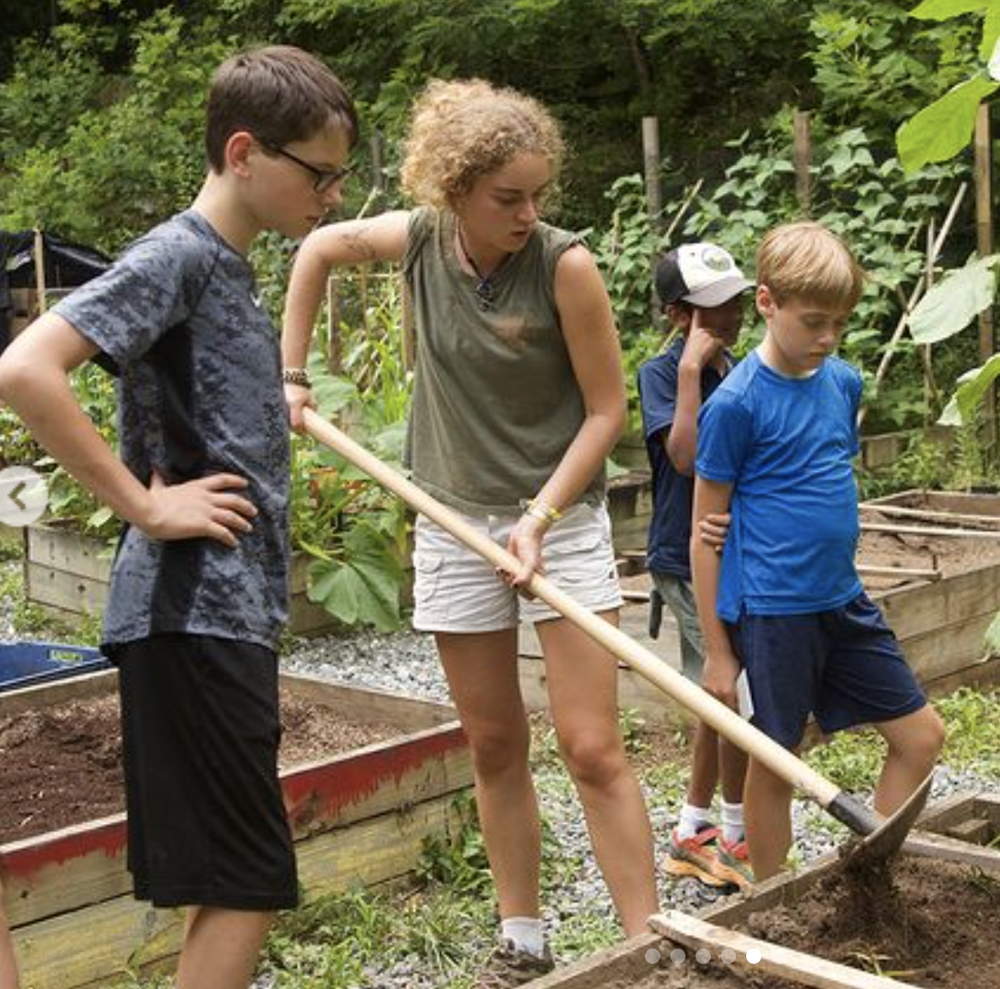
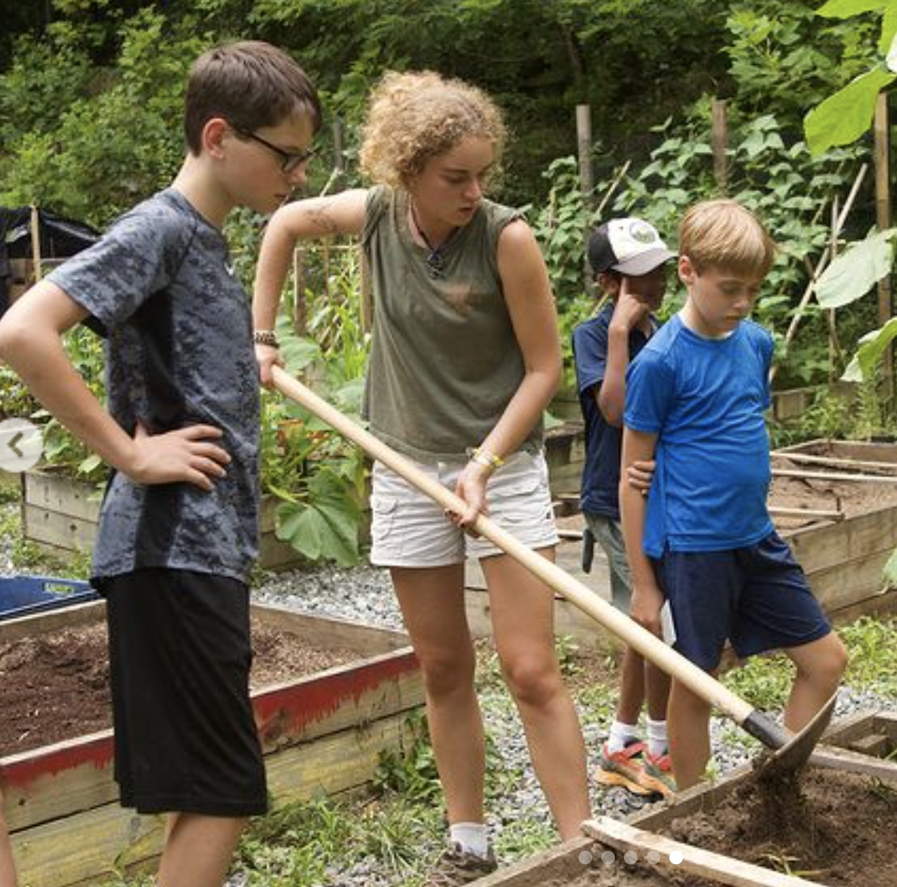

Welcome To Ella's Tribute Page
Welcome To Ella's Tribute Page
Welcome To Ella's Tribute Page
Ella is a girl and she resides in North Carolina. She did escape to Ecuador for awhile but she was caught smuggling boobies (blue footed) over international borders so she was sent back here. Now she lives a rather simple life as a student and barista at a bakery (DO NOT ask her for almond milk!)
Here is what Ella has to say about her life:
"The espresso machine's rhythmic hum echoes like a symphony, a stark contrast to the chaos of Quito's vibrant streets. I'm Ella, the dreamer from North Carolina who dared to chase the wild allure of the Galápagos Islands. Little did I know, my grand adventure would take an unexpected turn when I got caught playing seabird superhero against notorious smugglers.
In the blink of an eye, I was airborne again, but this time, not soaring over turquoise waters. Instead, I found myself back in my hometown, where the scent of coffee grounds replaced the salty air. College and a gig as a barista became my mundane reality, a far cry from the wild escapades I'd envisioned.
The thrill of exploration was replaced by the monotony of textbooks, and the only blue feet around were in my quirky barista shoes. Yet, in this unexpected detour, Courtney, my longtime friend who anxiously awaited my return, emerged as my saving grace. We shared laughs over steaming cups of coffee, turning North Carolina into a different kind of sanctuary.
As I spill the beans in this interview, the drama unfolds. Ecuador's adventure may be a distant memory, but the everyday magic of friendship and the quirks of home have a wit of their own. Home, with its steady rhythm and unexpected surprises, might not be the adrenaline rush of the unknown, but it's a drama worth savoring in its own caffeinated way."
- Ella Harlacher
 
